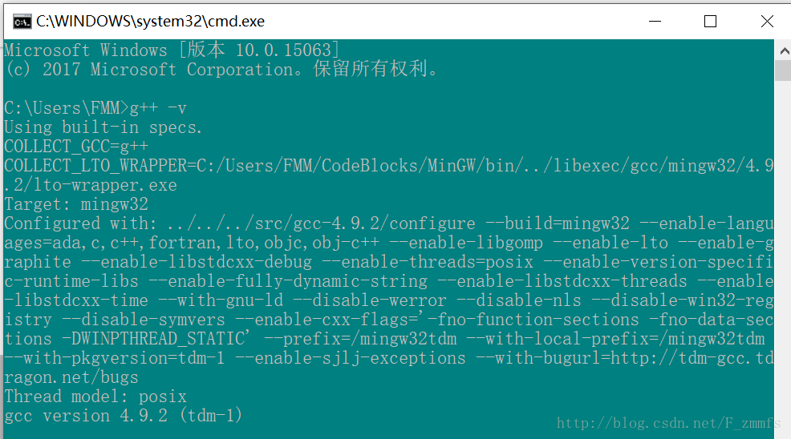

Last update: 2018-06-29 21:35
back to index目录：
在网上看到一个很有意思的博客，原文地址 这里记录一下，方便以后查阅。
(1)准备工作：
下载MinGW： mingw-get-setup
下载Notepad++： notepad++
(2)配置MingGW的环境变量。
主要目的是让系统能够找到g++的位置。将MinGW\bin的路径添加到path系统变量，如D:\MinGW\bin。
然后打开cmd，输入g++ -v，如果出现下图所示信息，说明MinGW配置成功。

(3)设置notepad++运行命令与快捷键。
点击notepad++菜单栏的运行》》运行，复制以下内容到输入框：
cmd /k cd /d "$(CURRENT_DIRECTORY)" & g++ "$(FILE_NAME)" -o "$(NAME_PART)" & "$(NAME_PART).exe"
#include
using namespace std;
int main(){
cout << "hello, notepad++" << endl;
cin.get();
return 0;
}
注：在MinGW贴吧里面，有吧友制作了完全绿色版的notepad+MinGW的编译器，支持C/C++。 点我传送
If, however, you're unhappy with something, please remind me: tangyulong202@126.com. Your opinions would help me a lot!
Yours Sincerely,
Aaron